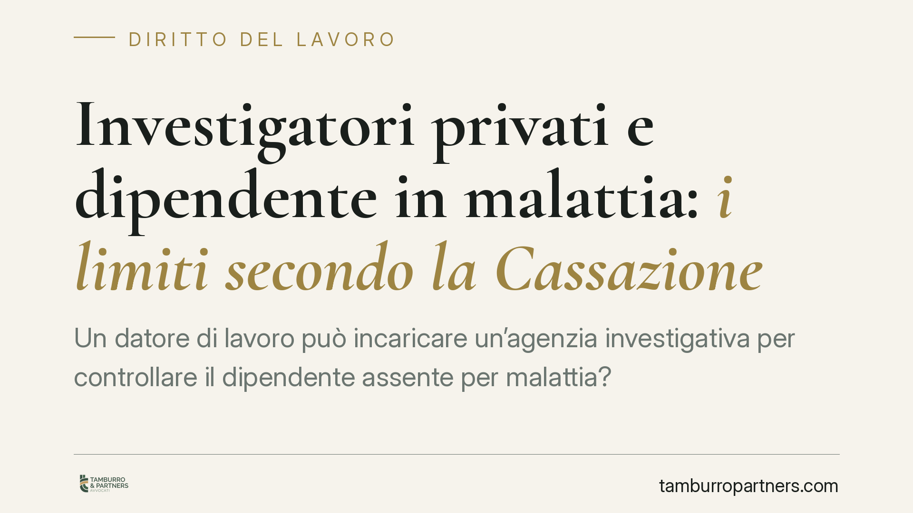

Investigatori privati e dipendente in malattia: i limiti secondo la Cassazione
Un datore di lavoro può incaricare un'agenzia investigativa per controllare il dipendente assente per malattia? La Corte di Cassazione è tornata sul tema, distinguendo tra osservazione lecita e condotta induttiva. La questione, secondo notizie di stampa specializzata, sarebbe stata rimessa a pubblica udienza per definire un indirizzo interpretativo uniforme. Ecco cosa è già consolidato e cosa cambia in concreto per aziende e lavoratori.

Il fatto
Il tema è ricorrente nel contenzioso del lavoro: il datore, sospettando che il dipendente in malattia stia in realtà svolgendo attività incompatibili con la patologia dichiarata, incarica un investigatore privato per raccogliere prove utili a un eventuale licenziamento disciplinare.
Secondo quanto riportato dalla stampa giuridica, la Cassazione avrebbe rinviato una simile controversia a pubblica udienza per fissare un indirizzo interpretativo più netto sui limiti di utilizzabilità delle prove così raccolte.
> Nota redazionale. Gli estremi dell'ordinanza citata dalla fonte (indicata come n. 13726/2026) non risultano allo stato verificabili nelle banche dati ufficiali e l'anno appare anomalo. Trattiamo quindi la pronuncia come riferimento in corso di pubblicazione / da confermare e ci concentriamo sui principi già consolidati, che restano validi a prescindere dalla singola ordinanza.
Inquadramento normativo
Il perimetro è fissato dallo Statuto dei lavoratori (L. 300/1970). L'art. 3 impone che i controlli sull'attività lavorativa siano noti al personale; l'art. 4 disciplina i controlli a distanza tramite strumenti tecnologici.
Accanto a queste norme, la giurisprudenza ha elaborato la categoria dei controlli difensivi: verifiche dirette non a controllare la prestazione ordinaria, ma ad accertare comportamenti illeciti del lavoratore già in atto o fondatamente sospettati. In quest'ambito l'indagine investigativa è ammessa, ma entro confini precisi.
È pacifico che l'investigatore non possa sorvegliare l'adempimento della prestazione lavorativa in senso proprio (funzione riservata al datore e ai suoi preposti), mentre può accertare comportamenti extralavorativi rilevanti sul piano disciplinare, come lo svolgimento di attività incompatibili con lo stato di malattia.
Osservazione lecita e condotta provocatoria
Il punto centrale è la distinzione tra due condotte investigative.
Investigazione osservativa. L'investigatore si limita a documentare comportamenti che il lavoratore tiene spontaneamente. Qui la prova è, in linea di principio, utilizzabile.
Condotta induttiva o provocatoria. L'investigatore non osserva soltanto, ma sollecita o crea l'occasione affinché il lavoratore compia l'attività "incriminata". In questo caso la prova rischia di essere ritenuta inutilizzabile, perché il comportamento non sarebbe emerso senza l'intervento attivo del controllore. È in questa cornice che parte della dottrina richiama, per analogia, la figura penalistica dell'agente provocatore: si tratta però di una categoria di elaborazione giurisprudenziale, non di un istituto legislativo tipizzato, e va usata con prudenza fuori dal processo penale.
Malattia non significa immobilità
Un chiarimento essenziale: lo stato di malattia non impone al lavoratore l'immobilità assoluta. Ciò che rileva è la compatibilità dell'attività svolta con la patologia certificata e, soprattutto, il fatto che quell'attività non ritardi o pregiudichi la guarigione.
Un dipendente con una lombalgia che fa una breve passeggiata non commette alcun illecito; lo stesso dipendente che trasloca mobili pesanti offre invece un elemento potenzialmente rilevante sul piano disciplinare. La valutazione è sempre concreta e legata al singolo quadro clinico.
Implicazioni pratiche
Per il datore, l'incarico investigativo non è una scorciatoia: prove raccolte oltre i limiti dei controlli difensivi, o mediante condotte induttive, possono essere dichiarate inutilizzabili e travolgere il licenziamento.
Per il lavoratore, la tutela della malattia non è incondizionata: comportamenti oggettivamente incompatibili con la patologia possono legittimare la sanzione, anche il licenziamento per giusta causa.
Cosa fare in concreto
Per il datore di lavoro:
- Attiva l'indagine solo in presenza di un sospetto fondato e circostanziato, non per controllo generalizzato.
- Circoscrivi l'incarico all'accertamento di condotte extralavorative, non alla prestazione ordinaria.
- Pretendi dall'agenzia una condotta meramente osservativa, escludendo ogni sollecitazione o provocazione.
Per il lavoratore:
- Rispetta le prescrizioni mediche e le fasce di reperibilità previste per la visita fiscale.
- Evita attività oggettivamente incompatibili con la patologia certificata o idonee a ritardarne la guarigione.
- In caso di contestazione, conserva la documentazione clinica e verifica con un legale le modalità di raccolta delle prove a tuo carico.
Conclusioni
In attesa che la pronuncia venga confermata e pubblicata, il quadro operativo resta ancorato ai principi consolidati sui controlli difensivi: l'investigazione è legittima se osservativa e proporzionata, mentre la provocazione della condotta ne compromette il valore probatorio.
---
*Contributo informativo a cura di Tamburro & Partners Avvocati – Avv. Giuseppe Tamburro. Non costituisce parere legale.*
Ogni storia di lavoro ha i suoi tempi.
Se gestisci HR e vuoi un confronto su contenzioso, ispezioni o licenziamenti, scrivi allo studio. Ti rispondiamo entro un giorno lavorativo.